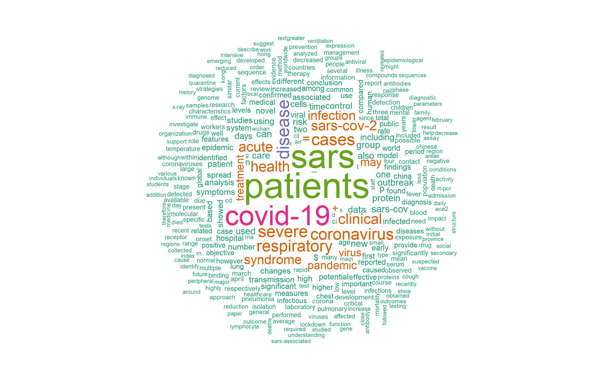

Introduction
Several thousands of papers are being published everyday. A paper published about a decade ago wrote “the total number of science papers published since 1665 passed 50 million. About 2.5 million new scientific papers are published each year.” In the introduction section of one of my previous systematic review, I wrote “The number of published research doubles every 9 years and its growth particularly in medicine and health care is exponential.”
Doing systematic reviews on a certain topic requires an extensive database search, title/abstract screening, full-text screening, quality assessment, data extraction, qualitative, quantitative synthesis and other important steps. Of these steps, at least title/abstract screening and full text reviews is required to be done by two review authors.
Going through the title and abstract of thousands of papers is time-taking, and laborious. Yet, policy makers medical practitioners require the latest evidence for making urgent decisions. Thanks to the development of machine learning and artificial intelligence over the past decade, systematic reviews can be used to automate or semi-automate some of the steps of systematic reviews. Systematic reviewers are already using some web-based text mining and machine learning tools such as Abstrackr, Robotreviewer, RobotAnalyst, etc. However, it is worth a try to implement text classification algorithms in R.
In a paper “Why Should I Trust You?”: Explaining the Predictions of Any Classifier", Riberio TL et.al described machine learning models as mostly “black boxes”. The biggest challenge of machine learning is interpretability and applying it to local context or simply to an individual or observation with a specific characteristics. They developed LIME which was later changed into Python and R packages. Lime can help explain several models implemented in about six different packages including caret, h2o, and xgboost.
In this blog post, I want to try one of the many available methods available to check whether machine learning methods correctly discriminates SARS papers from COVID19 papers. I know the two viruses are highly related. I am only using the SARS and COVID for demonstrations.
library(dplyr) #for data management
library(ggplot2) #for plotting
library(dplyr)
library(bib2df) #for converting bib file to data frame
library(xgboost)
library(lime) #for explaining machine learning modelsData
I will use the COVID19 data that I used in my previous blog post. In addition, I have added new reference data by searching SARS papers published from January 1/2003 until September 12/2003.
I will reuse some of my previous codes here again.
library(bib2df)
library(dplyr)
covid <- bib2df("covid19.bib") %>% # imprort references
filter(!is.na(ABSTRACT)) %>% # select only papers with no missing abstract
select("TITLE", "ABSTRACT", "KEYWORDS", "AUTHOR", "BIBTEXKEY") # Select few variables
# 2003 corona virus
covexclude <- bib2df("covexclude.bib") %>%
filter(!is.na(ABSTRACT)) %>%
select("TITLE", "ABSTRACT", "KEYWORDS", "AUTHOR", "BIBTEXKEY")
cov2003 <- bib2df("cov2003.bib") %>%
filter(!is.na(ABSTRACT)) %>%
select("TITLE", "ABSTRACT", "KEYWORDS", "AUTHOR", "BIBTEXKEY")
# Now import the TB data
sars <- bib2df("sars.bib") %>%
filter(!is.na(ABSTRACT)) %>%
select("TITLE", "ABSTRACT", "KEYWORDS", "AUTHOR", "BIBTEXKEY")Assume we are only looking for COVID19 papers to include in our review. That means we will need to exclude all SARS papers published in 2003. I will simply use a simple include/exclude decisions.
We will now create a new binary factor factor variable called “Include”. We will then assign 1 for all covid papers and 0 for all SARS papers. To make the decissions look more in real world setting, I excluded 40 COVID papers published in August 22/2020. This has nothing to do with the contents of the papers. I am arbitrarily excluding the papers to make it look like a real world title/abstract screening not just a random decision.
After that I will merge the two data frames with a simple rbind() code
# Exclude all covid papers
covid$Include <- 1
covexclude$Include <- 0
cov2003$Include <- 1
sars$Include <- 0
# Now merge the tw data frames
covid_sars <- rbind(covid, covexclude, sars, cov2003)Now check number of included and excluded papers
library(dplyr)
table(covid_sars$Include)
0 1
472 509
# check the type of this variable and convert it to factor
typeof(covid_sars$Include) # it is double. We have to convert it to factor variable
[1] "double"
covid_sars$Include[covid_sars$Include=="1"]<-"included"
covid_sars$Include[covid_sars$Include=="0"]<-"not included"
table(covid_sars$Include) %>% prop.table() #66% excluded, 34% included
included not included
0.5188583 0.4811417 Now split the data

Machine learning algorithms require our data to be split into training and testing. The training data will be used to train the model and the testing data sets will be used to make predictions by deploying the model developed using the training sets. There are different ways of splitting our data to training and testing split. You may use base R, Resample or Caret package to easily perform this task. Here, I will use my favorite R packager: the Caret package. We will use 70/30 split which means 70% of my data will be assigned to the training set and 30% the data will be used for test sets.
I will need to stratify my data split by my dependent variable. That means my train and test data will have exactly similar proportion for the outcome variable responses as the original data sets. That is 51% for excluded (coded as 0) and 49% for included (coded as 1). The data is nearly balanced. We don’t have the curse of class imbalance here, awesome!
library(caret)
set.seed(3456) # for reproducibility
trainIndex <- createDataPartition(covid_sars$Include, p = .7,
list = FALSE,
times = 1)
train <- covid_sars[ trainIndex,]
test <- covid_sars[-trainIndex,]
prop.table(table(covid_sars$Include)) # outcome proportion for th original data
included not included
0.5188583 0.4811417
prop.table(table(train$Include)) # outcome proportion for training data
included not included
0.5188953 0.4811047
prop.table(table(test$Include)) # outcome proportion for testing data
included not included
0.5187713 0.4812287
# Cool! They have exactly similar proportions with respect to the outcome variable. The nice part

library(text2vec)
get_matrix <- function(text) {
it <- itoken(text, progressbar = FALSE)
create_dtm(it, vectorizer = hash_vectorizer())
}
dtm_train = get_matrix(train$ABSTRACT)
dtm_test = get_matrix(test$ABSTRACT)
# Create boosting model for binary classification (-> logistic loss)
# Other parameters are quite standard
library(xgboost) # I will use extreme gradient boosting algorithm for building the model. But, I will also try other algorithms in the future.
param <- list(max_depth = 10,
eta = 0.1,
objective = "binary:logistic",
eval_metric = "error",
nthread = 1) # I will set the paprametres nearly similarly as it was described in the example from the package description.
xgb_model <- xgb.train(
param,
xgb.DMatrix(dtm_train, label = train$Include=="included"),
nrounds = 50
)Now let’s use our model to predict the test set
library(caret)
predictions <- predict(xgb_model, dtm_test)
# prediction probabilities
predict <- ifelse(predictions > 0.5, "included", "not included") # assign prediction probabilities greater than 0.5 as included and less than 0.5 as not included
confusionMatrix(as.factor(predict), as.factor(test$Include))
Confusion Matrix and Statistics
Reference
Prediction included not included
included 142 9
not included 10 132
Accuracy : 0.9352
95% CI : (0.9006, 0.9605)
No Information Rate : 0.5188
P-Value [Acc > NIR] : <2e-16
Kappa : 0.8702
Mcnemar's Test P-Value : 1
Sensitivity : 0.9342
Specificity : 0.9362
Pos Pred Value : 0.9404
Neg Pred Value : 0.9296
Prevalence : 0.5188
Detection Rate : 0.4846
Detection Prevalence : 0.5154
Balanced Accuracy : 0.9352
'Positive' Class : included
It resulted 93.5% accuracy. In real world setting this may not happen because we will work on highly related titles and abstracts. My experiment brings two somehow related documents (SARS and covid19). ALthough we are explcitly looking for covid papers, I assigned some of the covid papers to be excluded just to add some confusion.
Let’s pick two abstracts(Abstract #89 and #271) and see what are the most important terms of the abstract that xgboost used for its predictions. We will use lime package to explain the predictions
Abstract number 89
We need to use lime:: to avoid conflicts with dplyrpackage
ab_to_explain89 <- head(test[89,]$ABSTRACT, 6)
explainer89 <- lime::lime(ab_to_explain89, model = xgb_model,
preprocess = get_matrix)
explanation89 <- lime::explain(ab_to_explain89, explainer89, n_labels=1,
n_features = 7) # Set number most important features to 7
explanation89[, 2:10]
# A tibble: 7 x 9
case label label_prob model_r2 model_intercept model_prediction
<int> <chr> <dbl> <dbl> <dbl> <dbl>
1 1 0 0.992 0.827 0.981 0.990
2 1 0 0.992 0.827 0.981 0.990
3 1 0 0.992 0.827 0.981 0.990
4 1 0 0.992 0.827 0.981 0.990
5 1 0 0.992 0.827 0.981 0.990
6 1 0 0.992 0.827 0.981 0.990
7 1 0 0.992 0.827 0.981 0.990
# ... with 3 more variables: feature <chr>, feature_value <chr>,
# feature_weight <dbl>
lime::plot_features(explanation89)
The word sars is most important word that xgb model used to predict the exclusion of this this abstract.
lime::plot_text_explanations(explanation89)Abstract 283
library(lime)
ab_to_explain <- head(test[271,]$ABSTRACT, 6)
explainer <- lime(ab_to_explain, model = xgb_model,
preprocess = get_matrix,
tokenization =default_tokenize)
explanation <- explain(ab_to_explain, explainer, n_labels=1,
n_features = 7) # Set number most important features to 7
explanation[, 2:10]
# A tibble: 7 x 9
case label label_prob model_r2 model_intercept model_prediction
<int> <chr> <dbl> <dbl> <dbl> <dbl>
1 1 0 0.671 0.836 0.846 0.585
2 1 0 0.671 0.836 0.846 0.585
3 1 0 0.671 0.836 0.846 0.585
4 1 0 0.671 0.836 0.846 0.585
5 1 0 0.671 0.836 0.846 0.585
6 1 0 0.671 0.836 0.846 0.585
7 1 0 0.671 0.836 0.846 0.585
# ... with 3 more variables: feature <chr>, feature_value <chr>,
# feature_weight <dbl>
plot_features(explanation)
plot_text_explanations(explanation)The word corona is used for predicting “Include” with 67% probability.
The above modelling is dirty.It didn’t use only the relevant words. I will use quanteda package to remove all irrelavnt words.
library (quanteda)Create corpus
names(train)
[1] "TITLE" "ABSTRACT" "KEYWORDS" "AUTHOR" "BIBTEXKEY"
[6] "Include"
train_data <- train[, c(5,6)] # I need only some of my variables: include, and BIBTEXKEY. I don't need the rest of the variables for now. The BIBTEX key variable helps me to identify the papers it is written like Authoryyyy.1. I will use it to attach as a document identifier.
# Now build the corpus using abstracts of the papers
train_corpus <- corpus(train$ABSTRACT,
docvars = data.frame(abstract_BIBTEX = names(train_data))) # I added the docvars to save the additional variables other than the abstractSimilarly for the test set
names(test)
[1] "TITLE" "ABSTRACT" "KEYWORDS" "AUTHOR" "BIBTEXKEY"
[6] "Include"
test1 <- test %>%
filter(BIBTEXKEY!="NA")
test_data <- test1[, c(5,6)]
test_corpus <- corpus(test1$ABSTRACT)Add document identifier for both test and training set data
docid <- paste(train$BIBTEXKEY)
docnames(train_corpus) <- docid
print(train_corpus)
Corpus consisting of 688 documents and 1 docvar.
Ataguba2020.1 :
"The coronavirus disease 2019 (COVID-19) pandemic has affecte..."
Sigala2020.1 :
"The paper aims to critically review past and emerging litera..."
Lechner2020.1 :
"Amidst the coronavirus pandemic, universities across the cou..."
VanDorp2020.1 :
"SARS-CoV-2 is a SARS-like coronavirus of likely zoonotic ori..."
Barilla2020.1 :
": ACE2 receptor has a broad expression pattern in the cellul..."
Zhang2020d.1 :
"The nucleocapsid protein is significant in the formation of ..."
[ reached max_ndoc ... 682 more documents ]Attach the document identifier also for the test set
docidtest <- paste(test1$BIBTEXKEY)
docnames(test_corpus) <- docidtest
print(test_corpus)
Corpus consisting of 283 documents.
Coccia2020.1 :
"This study has two goals. The first is to explain the geo-en..."
Cagliani2020.1 :
"In December 2019, a novel human-infecting coronavirus (SARS-..."
Okba2020.1 :
"Middle East respiratory syndrome coronavirus (MERS-CoV) is a..."
Donthu2020.1 :
"The COVID-19 outbreak is a sharp reminder that pandemics, li..."
Wister2020.1 :
"The COVID-19 global crisis is reshaping Canadian society in ..."
Acter2020.1 :
"According to data compiled by researchers at Johns Hopkins U..."
[ reached max_ndoc ... 277 more documents ]Tokenize
I will create tokens and then later document feature matrix for both train and test abstract copuses. We do the same tokenization process as we did in my previous blog post. We will remove numbers, remove punctuation, or remove a customized list of stop words
custom_stop_words <- c("background", "introduction","aims", "objectives", "materials", "methods", "results", "conclusions","textless", "study")
train_tokens <- tokens(train_corpus, remove_punct = TRUE,
remove_numbers = TRUE)
train_tokens <- tokens_select(train_tokens, pattern = stopwords('en'), selection = 'remove') # remove irrelevant words
train_tokens <- tokens_select(train_tokens, pattern = custom_stop_words, selection = 'remove') # remove customized list of stop wordsI do the same for the test abstract corpuses
test_tokens <- tokens(test_corpus, remove_punct = TRUE,
remove_numbers = TRUE)
test_tokens <- tokens_select(test_tokens, pattern = stopwords('en'), selection = 'remove') # remove irrelevant words
test_tokens <- tokens_select(test_tokens, pattern = custom_stop_words, selection = 'remove') # remove customized list of stop wordsConstruct document feature matrix for both train and test abstract tokens
train_dfmat <- dfm(train_tokens)
test_dfmat <- dfm(test_tokens)Have a quick look of the two document feature matrices
head(train_dfmat)
Document-feature matrix of: 6 documents, 11,318 features (99.1% sparse) and 1 docvar.
features
docs coronavirus disease covid-19 pandemic affected many
Ataguba2020.1 2 2 6 3 1 7
Sigala2020.1 0 0 4 1 0 0
Lechner2020.1 2 0 0 2 0 0
VanDorp2020.1 1 0 1 1 0 0
Barilla2020.1 1 1 2 1 0 1
Zhang2020d.1 1 0 1 0 0 0
features
docs countries increasing morbidity mortality
Ataguba2020.1 7 1 2 1
Sigala2020.1 0 0 0 0
Lechner2020.1 0 0 0 0
VanDorp2020.1 1 0 0 0
Barilla2020.1 0 0 0 0
Zhang2020d.1 0 0 0 0
[ reached max_nfeat ... 11,308 more features ]
head(test_dfmat)
Document-feature matrix of: 6 documents, 6,953 features (98.4% sparse).
features
docs two goals first explain geo-environmental
Coccia2020.1 1 1 1 1 1
Cagliani2020.1 0 0 0 0 0
Okba2020.1 0 0 0 0 0
Donthu2020.1 0 0 0 0 0
Wister2020.1 0 0 0 0 0
Acter2020.1 1 0 0 0 0
features
docs determinants accelerated diffusion covid-19
Coccia2020.1 1 3 3 9
Cagliani2020.1 0 0 0 0
Okba2020.1 0 0 0 0
Donthu2020.1 0 0 0 1
Wister2020.1 0 0 0 4
Acter2020.1 0 0 0 1
features
docs generating
Coccia2020.1 1
Cagliani2020.1 0
Okba2020.1 0
Donthu2020.1 0
Wister2020.1 0
Acter2020.1 0
[ reached max_nfeat ... 6,943 more features ]
dim(train_dfmat) # 646 abstracts 11191 features/terms
[1] 688 11318
dim(test_dfmat) # 276 abstracts 6668 features/terms
[1] 283 6953
# Or simply pass the dfm object in ndoc() or nfeat() functions
ndoc(train_dfmat)
[1] 688
nfeat(train_dfmat)
[1] 11318
ndoc(test_dfmat)
[1] 283
nfeat(test_dfmat)
[1] 6953Vizualize the test and train document feature matrices
Vizualizing the data is very importnat. Let’s see how the wordclouds look for train and test abstracts.
library(RColorBrewer)
pal <- brewer.pal(5, "Dark2")
textplot_wordcloud(train_dfmat, min_count = 40,max_words = 400,
color = pal)
Similarly, for the test_dfmat
textplot_wordcloud(test_dfmat, min_count = 20,max_words = 400,
color = pal)
Both plots of the test and train data are comparable.
Document classification using Naive Bayes
I need the following packages
library(quanteda)
library(quanteda.textmodels)
library(caret)
naive_bayes <- textmodel_nb(train_dfmat,train_data$Include)
summary(naive_bayes)
Call:
textmodel_nb.dfm(x = train_dfmat, y = train_data$Include)
Class Priors:
(showing first 2 elements)
included not included
0.5 0.5
Estimated Feature Scores:
coronavirus disease covid-19 pandemic affected
included 0.004073 0.004474 0.0148763 0.0047994 0.0005928
not included 0.003578 0.004268 0.0007113 0.0004311 0.0006035
many countries increasing morbidity mortality
included 0.0007840 0.0011664 0.0005736 0.0001912 0.0004780
not included 0.0007329 0.0005604 0.0001078 0.0001509 0.0006898
interestingly actions policies adopted linked
included 1.147e-04 2.103e-04 1.912e-04 1.530e-04 0.0001912
not included 6.466e-05 6.466e-05 4.311e-05 4.311e-05 0.0001940
social determinants health sdh critical
included 0.0007457 9.561e-05 0.003729 1.147e-04 0.0007457
not included 0.0002155 8.622e-05 0.003341 2.155e-05 0.0004742
inequalities directly within sector distancing
included 3.824e-05 0.0002677 0.0007075 1.721e-04 3.059e-04
not included 2.155e-05 0.0001293 0.0009700 8.622e-05 6.466e-05
good hygiene avoiding large gatherings
included 0.0003251 0.0001147 1.338e-04 0.0005736 3.824e-05
not included 0.0002155 0.0001078 2.155e-05 0.0007760 2.155e-05Since we have already our model, we can use it for predicting the test sets. Unfortunately, the features in test_dfmat which are also in train_dfmat. Quanteda package has one really nice function called dfm_match() to select only features of the testing set that also occur in the training set.
matched_dfmat <- dfm_match(test_dfmat, features = featnames(train_dfmat))
actual_class <- test_data$Include
predicted_class <- predict(naive_bayes, newdata = matched_dfmat)
tab_class <- table(predicted_class, actual_class )
tab_class
actual_class
predicted_class included not included
included 135 18
not included 17 113
confusionMatrix(tab_class, mode = "everything")
Confusion Matrix and Statistics
actual_class
predicted_class included not included
included 135 18
not included 17 113
Accuracy : 0.8763
95% CI : (0.8322, 0.9123)
No Information Rate : 0.5371
P-Value [Acc > NIR] : <2e-16
Kappa : 0.7511
Mcnemar's Test P-Value : 1
Sensitivity : 0.8882
Specificity : 0.8626
Pos Pred Value : 0.8824
Neg Pred Value : 0.8692
Precision : 0.8824
Recall : 0.8882
F1 : 0.8852
Prevalence : 0.5371
Detection Rate : 0.4770
Detection Prevalence : 0.5406
Balanced Accuracy : 0.8754
'Positive' Class : included
Our models predicted the test data set with 87.6% accuracy. This is woderful! The other model performance parameters are also very promising. # How about Support Vector Machines?
train_svm <- textmodel_svm(train_dfmat,train_data$Include, weight="uniform") # There are three weighting options. I don't have problem of class imbalance, let me just use the default "uniform"Predict the test set using SVM
Actual <- test_data$Include
predicted_class_svm <- predict(train_svm, newdata = matched_dfmat)
tab_class_svm <- table(predicted_class_svm, Actual )
tab_class_svm
Actual
predicted_class_svm included not included
included 145 14
not included 7 117Now the confusion matrix
confusionMatrix(tab_class_svm, mode = "everything")
Confusion Matrix and Statistics
Actual
predicted_class_svm included not included
included 145 14
not included 7 117
Accuracy : 0.9258
95% CI : (0.8888, 0.9535)
No Information Rate : 0.5371
P-Value [Acc > NIR] : <2e-16
Kappa : 0.8502
Mcnemar's Test P-Value : 0.1904
Sensitivity : 0.9539
Specificity : 0.8931
Pos Pred Value : 0.9119
Neg Pred Value : 0.9435
Precision : 0.9119
Recall : 0.9539
F1 : 0.9325
Prevalence : 0.5371
Detection Rate : 0.5124
Detection Prevalence : 0.5618
Balanced Accuracy : 0.9235
'Positive' Class : included
SVM prediction is quite remarkable. Almost 92.6% accurate prediction. This is cool. Look at the other performance measures: sensitivity, specificity, PVP, NPV, recall, precision. They are all more than 90%!
One limitation of implementing these models using quanteda.textmodels is we cannot benefit the great advantages of lime package, we cannot use lime to explain our naive_bayes model locally (within abstracts) as we did it our prediction using XGB because lime currently doesn’t support quanteda.textmodels package. Currently lime package only explains models developed using mlr, xgboost, h2o, keras, or MASSpackages.
Final remarks
I have tried three different models and the level of accuracy has improved through my model choices. I see lots of beautiful things that we can take advantage of NLP for systematic reviews. However, the process is quite complex, computationally expensive and we don’t know which model works best unless we experiment several models with broad range of model parameters. I can see its tremendous potential even after such a tiny scratch on its surface. We don’t know what would happen if I process my abstracts using tf-idf, n-grams and redo my analysis with several models including deep learning, etc.
Next stop

Visualizing odds ratios/risk ratios in forest plots. See you! 👍
Contact
[@MihiretuKebede1](https://twitter.com/MihiretuKebede1)